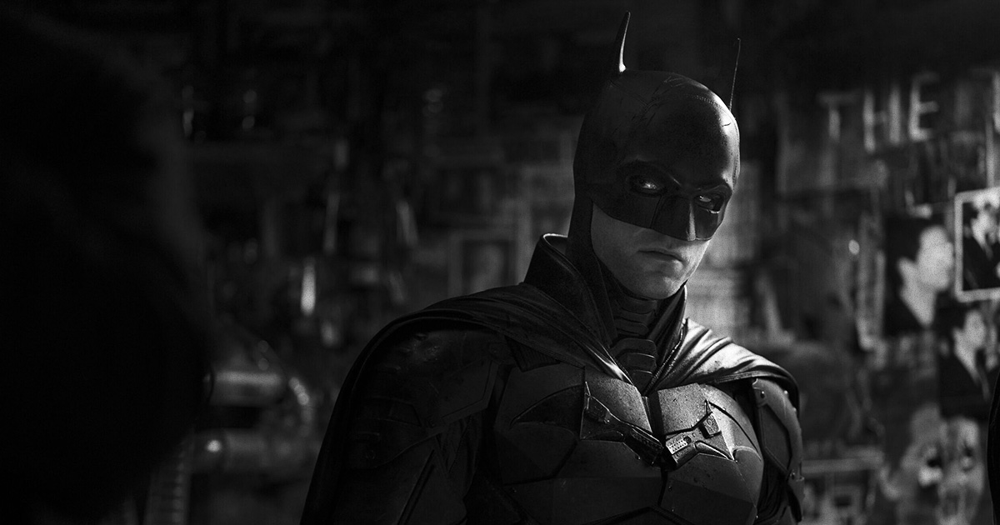

The Batman (2022), directed by Matt Reeves, offered a dark, but more detective-driven interpretation of the iconic character, blending noir storytelling with grounded realism. Robert Pattinson took on the role of a young, reclusive Bruce Wayne still finding his identity as Gotham’s vigilante, delivering a brooding and introspective performance that emphasized Batman’s intellect and emotional isolation. The film’s supporting cast added remarkable depth—Zoë Kravitz as the morally complex Selina Kyle, Paul Dano as a chillingly methodical Riddler, Colin Farrell as an unrecognizable Penguin, and Jeffrey Wright as the steadfast Jim Gordon. Reeves’s meticulous direction, paired with Greig Fraser’s moody cinematography and Michael Giacchino’s haunting score, created an atmosphere drenched in rain, shadow, and tension. Together, they crafted a film that stripped Batman back to his detective roots while exploring themes of vengeance, morality, and hope within a decaying Gotham City.
Matt Reeves’s decision to cast Robert Pattinson as Batman initially sparked skepticism, but his performance quickly silenced doubts and earned widespread praise. Known for his eclectic independent film roles following his breakout in Twilight, Pattinson brought a fresh, nuanced intensity to the character. His portrayal emphasized Bruce Wayne’s psychological complexity—an introverted, obsessive figure still haunted by grief and rage rather than the confident playboy seen in past versions. Reeves’s decision to cast Pattinson reflected a deliberate move toward a more grounded, emotionally raw interpretation of the Dark Knight. The actor’s understated charisma, combined with his brooding physicality and quiet vulnerability, redefined the role for a new generation, proving that Batman’s greatest power lies not in his strength or gadgets, but in his humanity.
Shot by acclaimed cinematographer Greig Fraser, the film adopts a dark, atmospheric aesthetic that blends noir sensibilities with gritty realism. Gotham City is depicted as a rain-soaked, neon-lit metropolis—alive yet decaying—reflecting the corruption and despair that Batman battles against. The use of shadow and minimal lighting creates a sense of mystery and tension, often framing Batman as both hunter and ghost within the city he protects. Fraser’s careful use of color, especially deep reds and muted blacks, enhances the film’s mood of moral ambiguity and inner conflict. Every shot feels deliberate and immersive, using visual language to mirror Bruce Wayne’s psychological journey from vengeance to understanding. The result is a visually striking, emotionally charged film where the camera itself becomes a storyteller, revealing Gotham’s darkness and its fragile glimpses of hope.
Paul Dano’s portrayal of the Riddler reimagines the classic villain as a chilling, methodical serial killer inspired by real-world figures like the Zodiac. Far from the flamboyant trickster of earlier versions, Dano’s Riddler is an obsessive mastermind driven by moral outrage and a twisted sense of justice, exposing Gotham’s corruption through cryptic clues and gruesome crimes. His performance is deeply unsettling—quietly intense one moment and explosively deranged the next—capturing a man consumed by both intellect and madness. Behind his mask and distorted voice lies a reflection of Batman himself: a vigilante shaped by trauma but corrupted by extremism. Dano’s grounded, psychologically disturbing take made the Riddler one of the most memorable and haunting villains in modern comic book cinema.